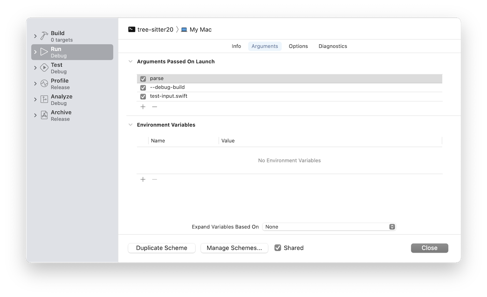
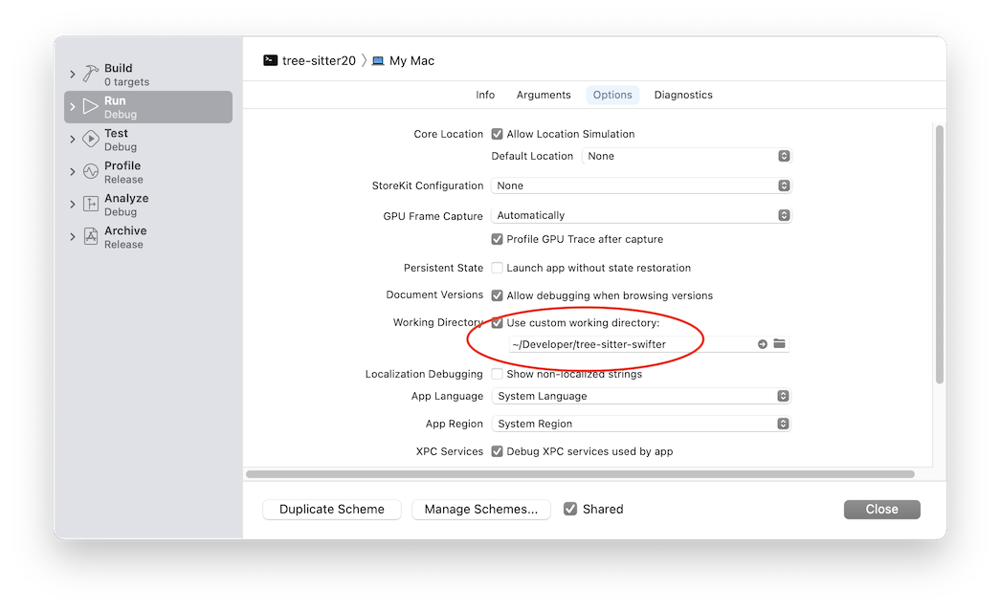

I’ve been developing a Tree-sitter grammar for Swift1 so I can get nice syntax highlighting when working in Emacs. Tree-sitter is a parser generator system: you primarily describe the target language’s grammar in a JavaScript DSL, which is used to generate C code that in turn becomes a grammar binary, which is loaded dynamically like a plugin by the tree-sitter library.
The process of development is very test-driven. I haven’t found it necessary to debug the generated code. There is a second level of “plugin”, however: for grammatical elements that cannot be described in the JS DSL you can supplement with your own C code. This is called an “external scanner”. Tree-sitter defines an API it uses to invoke your scanner, and provides one that your code can use in turn to query the current parse state. In the JS grammar you may declare a node as “external”, and it will be handled by this scanner.
The documentation for Tree-sitter is well-written but somewhat vague about the circumstances when the scanner will be invoked. There’s also no detailed error reporting from the scanner: just success or failure. I have found that being able to step through my C in the debugger is crucial while working on the scanner.
While I prefer not to use Xcode as a text editor, I think its debugging GUI is quite nice. So I really wanted to use it for this. But I don’t have an .xcodeproj; nor was I inclined to try to set one up for the Rust-based Tree-sitter project. (Or even to build it from scratch: I am happy using a prebuilt executable.) What I really wanted was just to somehow attach to the tree-sitter process, with the ability to set breakpoints in my scanner.c file. Well, turns out this not just possible, it’s easy!
First, go to the Debug menu in Xcode, and select Debug Executable…
This presents an Open dialog for you to select the binary you want to attach to. (In my case I navigated to /usr/local/bin/tree-sitter20.) Then Xcode creates an .xcworkspace file hidden away in a temporary directory and shows the usual project navigator window for it. You can move the .xcworkspace to a more permanent location if you like.
Use the Scheme editor to configure the working directory and arguments to be passed:
 
Now add the file you want to debug to the project, either via File > Add Files… or by simply dragging it in. You can now set breakpoints wherever you like in the file. Or, if you don’t have a source file, you can use regular LLDB commands (break set -n suspicious_function) to set them.2
Now run the project, and when a breakpoint is hit Xcode will drop into its normal debugging mode! The console and variables view will be at the bottom, with the execution state displayed in the editor window.
Exactly what I was hoping for!
https://gitlab.com/woolsweater/tree–sitter–swifter ↩︎
Side note here: LLDB is very good at matching up the binary and the source file, but stepping through may behave strangely if the code was built with optimization, and variables may also have been removed. For best results you want an unoptimized build with debug symbols included (-g for C code). ↩︎